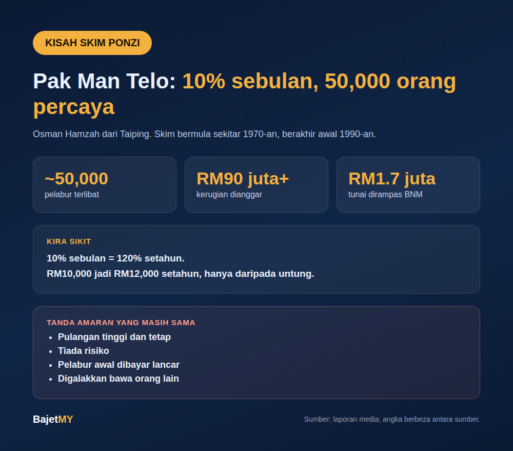

Pak Man Telo janji pulangan sekitar 10% sebulan, dan lebih kurang 50,000 orang percaya. Skim itu sudah lama berakhir, tapi cara ia berfungsi masih sama dengan banyak scam pelaburan hari ini.

Siapa Pak Man Telo?
Namanya Osman Hamzah, lebih dikenali sebagai Pak Man Telo, berasal dari Taiping, Perak. Menurut laporan media dan rujukan sejarah, skimnya bermula sekitar tahun 1970-an dan beroperasi sehingga awal 1990-an. Dia meninggal dunia pada tahun 1997.
Beberapa nama syarikat disebut dalam laporan berbeza (Pertama, Pestama), jadi nama sebenar skim tidak diseragamkan dalam semua sumber.
Apa yang dijanjikan
Skim itu menjanjikan dividen sekitar 10% hingga 12%, dilaporkan sebulan, dan dibayar tanpa lewat. Pada peringkat kemudian kadar dikurangkan.
Kira sikit:
- 10% sebulan ialah 120% setahun, belum campur kompaun.
- RM10,000 akan menjadi RM12,000 setahun, hanya daripada untung.
- Bandingkan dengan simpanan bank atau KWSP yang memberi beberapa peratus setahun.
Jarak itu sepatutnya membuat orang berhenti dan bertanya dari mana datangnya duit tersebut.
Bagaimana dia boleh bayar
Skim ini berfungsi seperti skim Ponzi: wang pelabur baru digunakan untuk membayar pulangan kepada pelabur lama. Tiada pelaburan sebenar yang menjana keuntungan sebanyak itu. Selagi orang baru terus masuk, semua nampak berjalan lancar, dan pelabur awal memang menerima bayaran. Itu yang membuat cerita tersebar dari mulut ke mulut.
Bagaimana ia berakhir
Bank Negara Malaysia menyerbu rumahnya dan merampas wang tunai kira-kira RM1.7 juta. Laporan berbeza memberi tarikh yang berbeza (1989 atau 1990), jadi kami tidak menyatakan tarikh tepat. Sekitar 50,000 pelabur terlibat, dan kerugian dianggar melebihi RM90 juta. Sumber berbeza menyebut RM90.9 juta dan RM99 juta, dan sebahagian menyatakan kerugian sebenar mungkin lebih besar. Kebanyakan pelabur kehilangan hampir semua wang mereka.
Tanda amaran yang masih sama hari ini
Skim sebegini masih wujud, cuma bertukar nama: kripto, forex, "robot trading", dan skim pelaburan dalam talian.
- Pulangan tinggi dan tetap. Pelaburan sebenar naik dan turun. Pulangan tetap yang tinggi jarang benar.
- Tiada risiko. Setiap pelaburan ada risiko. Jika dikatakan tiada, itu amaran.
- Bayaran awal yang lancar. Pelabur awal biasanya dibayar supaya cerita tersebar.
- Digalakkan bawa orang lain. Pulangan bergantung pada orang baru masuk.
- Tiada lesen. Menerima deposit tanpa lesen adalah kesalahan.
Apa korang boleh buat
- Semak entiti dalam Senarai Amaran Pelabur Suruhanjaya Sekuriti (SC) dan Senarai Amaran Pengguna Kewangan Bank Negara Malaysia (BNM) sebelum melabur.
- Gunakan kalkulator pelaburan Bajet MY untuk lihat berapa pulangan yang munasabah, dan bandingkan dengan janji yang ditawarkan.
- Tanya diri sendiri: jika orang dapat untung 10% sebulan, kenapa dia perlukan duit korang?
Sumber
- Soscili, Sebelum Macau Scam, dulu Pak Man Telo dah tipu lebih 50 ribu rakyat Malaysia
- Orang Perak, Pak Man Telo, Pelopor Skim Cepat Kaya Dari Taiping
- Kitareporters dan rujukan sejarah lain (angka kerugian dan tarikh berbeza antara sumber)